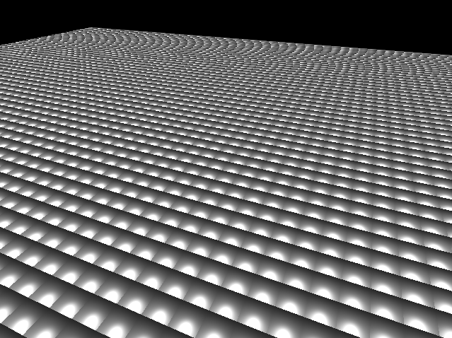
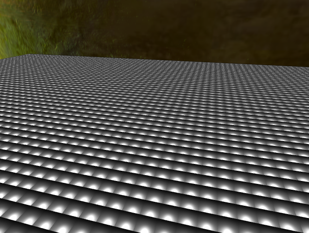

blog #2
Project Name: eRiceRice
Group Name: ProG(r)amers
Group Members:
Yingjie Luo
Boming Eric Cheng
Guyue Zhou
Project Description:
The protagonist is Dr Eric, a ball trying to navigate its way through a world of "rice", whatever rice is.
Progress:

Audio support is done. Deferred shader done (except for skybox) to pave way for SSAO, shadow mapping, glow and maybe more. Arbitrary geometry collisions are also in progress.
Revised Planned Features:
SSAO(EC)
Arbitrary geometry collisions(EC)
Shadow mapping
Glow
Per pixel texture shading(Done since hw4)
Audio(Done)
Our very amazing blogz #1
itll be better in the futurez, whenever that is
Project Name: eRiceRice
Group Name: ProG(r)amers
Group Members:
Yingjie Luo
Boming Eric Cheng
Guyue Zhou
Project Description:
The protagonist is Dr Eric, a ball trying to navigate its way through a world of rice.
This is not a full game, just a technical demo level.
Progress:

Completely rewritten. Currently functional culling, scene graph, skybox, shading, multiple lights.
Planned Features:
3 Hard:
Shadow mapping
Procedurally modeled buildings or objects with shape grammar
Displacement mapping
If time allows for EC:
Collision Detection with Arbitrary Geometry
Screen Space Ambient Occlusion
Water Effect with Reflection of 3D Models
If we get bored/fallback options:
Glow/Halo effect
Sound effects
Particle effect
None of the features has been worked on yet since thanksgiving happened.